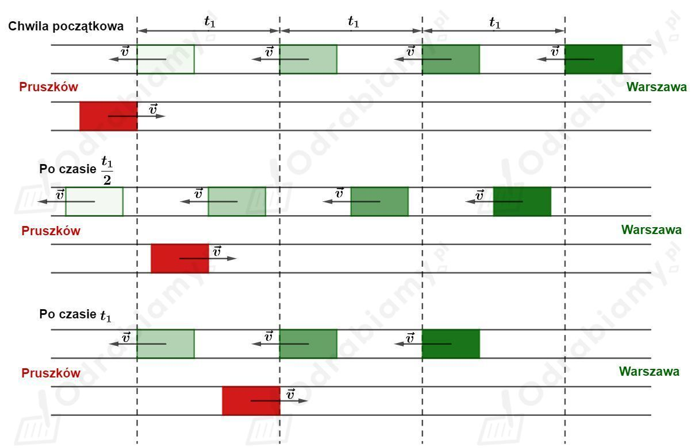

Czas pomiędzy wyruszeniem kolejnych pociągów z Warszawy do Pruszkowa wynosi:
Czas po którym maszynista pociągu z Pruszkowa do Warszawy spotyka następne pociągi jadące z Warszawy do Pruszkowa wynosi:
Przez to, że pociąg jadący z Pruszkowa do Warszawy również się porusza to maszynista kierujący tym pociągiem będzie spotykał nadjeżdżające pociągi częściej niż wynika to z odstępów czasowych w jakich wyjechały te pociągi z Warszawy.
Poniższy rysunek obrazuje tę sytuację.

Pociągi zielone to te jadące z Warszawy do Pruszkowa - startują z Warszawy w odstępach czasowych równych .
Pociąg czerwony jedzie z Pruszkowa do Warszawy.
Rozpatrujemy chwilę początkową kiedy pociąg czerwony mija się z pociągiem zielonym.
Po czasie od chwili początkowej zarówno pociągi zielone jak i czerwony przebędą pewną odległość - pociągi zielony i czerwony mają ponownie się mijać.
Po czasie od chwili początkowej pociągi zielone i czerwony przebędą kolejny dystans - nastąpi kolejne mijanie się pociągów.
Zatem pociągi jadące z Warszawy do Pruszkowa co 20 minut, maszynista pociągu jadącego z Pruszkowa do Warszawy będzie mijał co 10 minut.
Opisana w zadaniu sytuacja jest analogią do zjawiska Dopplera, kiedy źródło fali się nie porusza a obserwator porusza się w kierunku źródła.
Pociągi zielone to kolejne grzbiety fali, która jest wysyłana w kierunku zbliżającego się obserwatora - pociąg czerwony. Dla maszynista spotyka pociągi zielone częściej - z większą częstotliwością, niż częstotliwość z jaką pociągi są wysyłane z Warszawy.
Dane:
Prędkość dźwięku w powietrzu przyjmujemy jako:
Szukane:
Rozwiązanie:
a)
Obserwator zbliża się do źródła dźwięku.
Korzystamy ze wzoru:
Wyznaczmy zmianę częstotliwości dźwięku jaką zauważy obserwator:
Obserwator zbliża się do źródła dźwięku, zatem słyszana częstotliwość będzie większa od częstotliwości wysyłanej przez źródło.
Kierowca samochodu usłyszy dźwięk o częstotliwości 162,1 Hz.
b)
Obserwator oddala się od źródła dźwięku.
Wyznaczona zmiana częstotliwości dźwięku jaką zauważy obserwator wynosi:
Obserwator oddala się od źródła dźwięku, zatem słyszana częstotliwość będzie mniejsza od częstotliwości wysyłanej przez źródło.
Kierowca samochodu usłyszy dźwięk o częstotliwości 137,9 Hz.
Częstotliwość światła czerwonego przyjmujemy jako:
Częstotliwość światła zielonego przyjmujemy jako:
Prędkość światła wynosi:
Korzystamy ze wzoru:
Jeżeli obserwator (kierowca) zobaczył zielone światło zamiast czerwonego to musiał doświadczyć zmiany częstotliwości fali równej:
Zatem:
Wyznaczmy z jaką prędkością musiałby poruszać się obserwator:
Kierowca musiałby poruszać się z niewyobrażalnie dużą prędkością, aby na skutek efektu Dopplera zobaczył światło zielone zamiast czerwonego. Jeżeli policjant zamierza uwierzyć kierowcy to powinien wystawić mu mandat nie za przejechanie na czerwonym świetle, a za przekroczenie dozwolonej prędkości.
Dane:
Prędkość rozchodzenia się fal elektromagnetycznych jest równa:
Szukane:
Rozwiązanie:
Rozpatrujemy zjawisko Dopplera w dwóch etapach. Najpierw mikrofale wysyłane przez nieruchomy radar docierają do poruszającego się odbiorcy - samochód.
Do samochodu dociera fala o zwiększonej częstotliwości.
Korzystamy ze wzoru:
Wyznaczmy zmianę częstotliwości fali:
Fale docierające do samochodu mają częstotliwość równą:
Następnie fale odbijają się od samochodu i wracają do radaru. Poruszający się samochód staje się źródłem fal, a radar nieruchomym obserwatorem.
Korzystamy ze wzoru:
Wyznaczmy zmianę częstotliwości fali:
Fale docierające do radaru mają częstotliwość równą:
Podstawmy do powyższego wzoru wyznaczone wcześniej zależności:
Zatem częstotliwość fali wracającej do radaru jest równa: